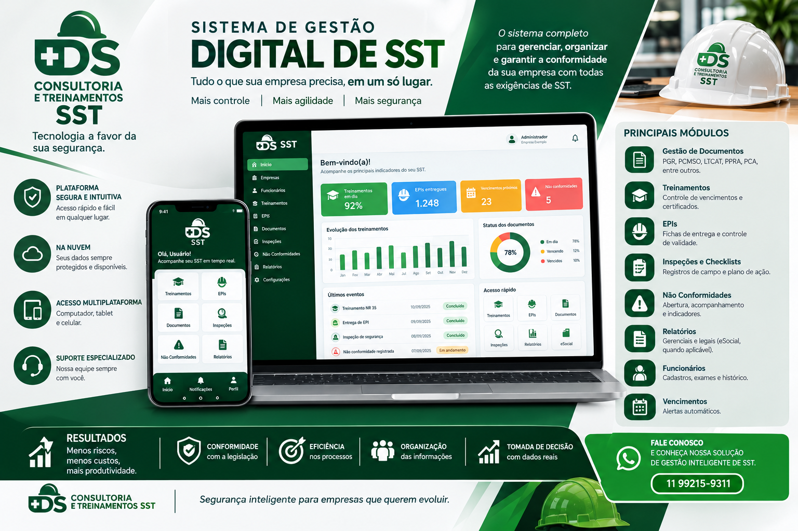

Treinamentos de Segurança
Capacitação em normas essenciais para fortalecer a cultura de prevenção, reduzir riscos e orientar o time em procedimentos críticos.
Solicitar treinamento
Capacitação
Consultoria especializada em Segurança e Saúde do Trabalho para empresas que precisam fortalecer a prevenção, a conformidade e a gestão operacional com rigor técnico e visão estratégica.
A DS Consultoria e Treinamentos SST é especializada em Segurança e Saúde do Trabalho, oferecendo soluções completas para empresas que buscam prevenção de acidentes, controle de riscos e conformidade com as Normas Regulamentadoras.
Redução de riscos e fortalecimento da cultura de segurança.
Atendimento às exigências legais e organização documental.
Estrutura, acompanhamento e controle operacional de SST.
Processos práticos, técnicos e alinhados à operação.
Gestão completa de Segurança do Trabalho com controle documental e operacional.
Elaboração e organização da documentação técnica e regulatória.
Monitoramento técnico e apoio em canteiros, instalações e atividades críticas.
Capacitação técnica em normas, procedimentos e cultura de prevenção.
Avaliação técnica da conformidade, riscos e adequação da operação.
Identificação, avaliação e controle de perigos em atividades críticas.
Organização e apoio na transmissão de informações de Segurança do Trabalho.
Integração entre segurança, saúde ocupacional e documentação técnica.
Preparação, treinamentos e procedimentos para resposta em situações críticas.
DS SST Gestão Inteligente para gestão conectada, eficiente e digitalizada.
Precisa de uma solução para sua empresa?
Falar com um especialistaCapacitação em normas essenciais para fortalecer a cultura de prevenção, reduzir riscos e orientar o time em procedimentos críticos.
Solicitar treinamentoAcompanhamento técnico preventivo em canteiros, inspeções e ações de controle para garantir segurança, organização e conformidade operacional.
Solicitar consultoriaUma solução digital pensada para fortalecer a gestão de Segurança do Trabalho com organização, rastreabilidade e apoio operacional diário.

A DS parte da realidade de cada empresa para compreender necessidades, avaliar riscos e apoiar a evolução da Segurança e Saúde do Trabalho de forma clara e estruturada.
Conhecimento do contexto, da operação e das demandas de SST da empresa.
Análise dos riscos, documentos e pontos que precisam de atenção.
Organização das ações necessárias para apoiar prevenção e conformidade.
Aplicação das soluções e acompanhamento das ações de Segurança do Trabalho.
Entre em contato para conversar sobre as necessidades de Segurança e Saúde do Trabalho da sua empresa e encontrar o melhor caminho para sua operação.
Contato direto pelo WhatsApp